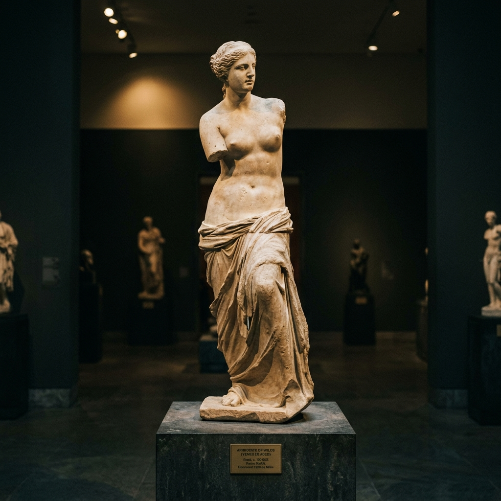
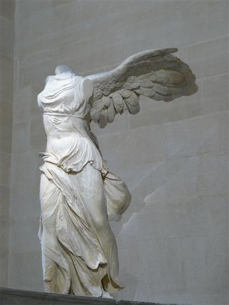
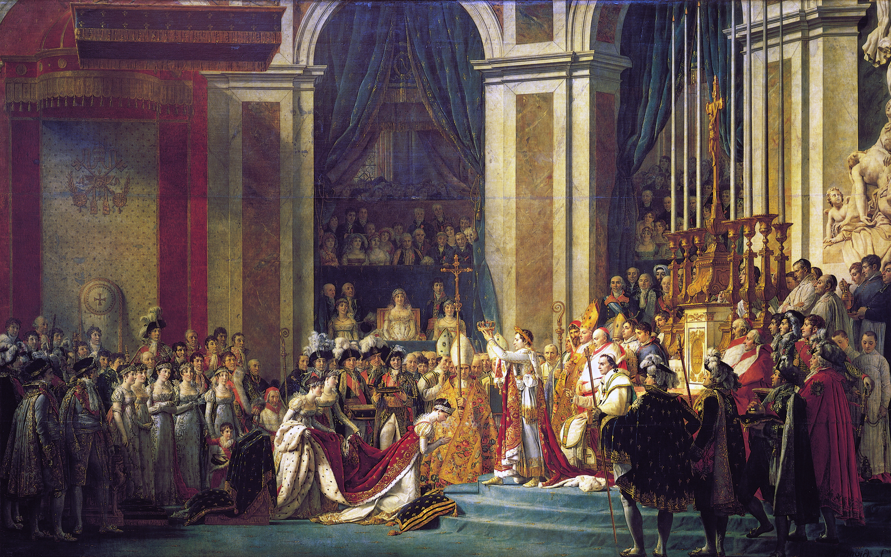
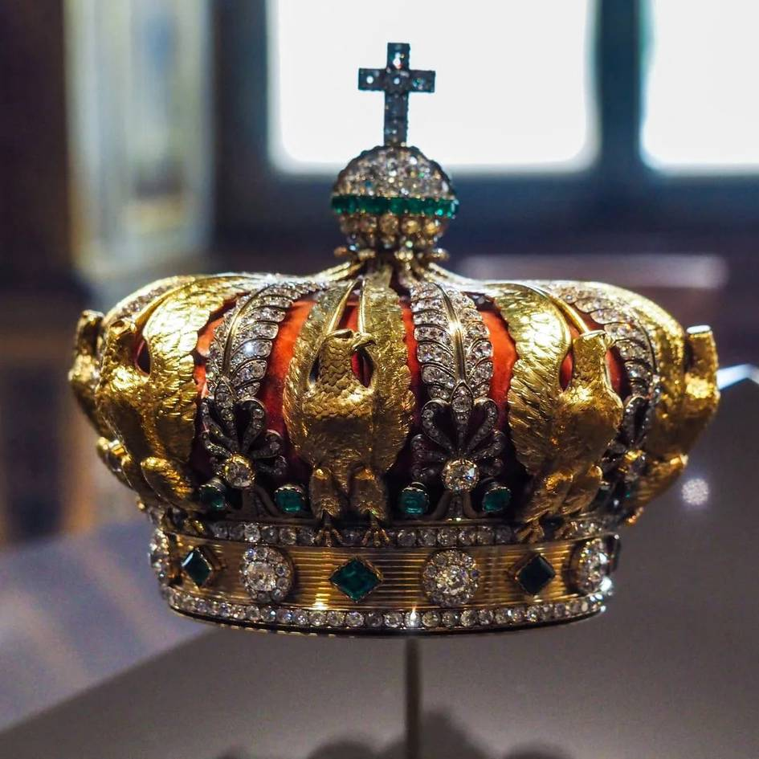

LOUVRE
The Louvre Museum in Paris, France, is the largest art museum in the world and home to legendary masterpieces like the Mona Lisa, Venus de Milo, and Winged Victory of Samothrace.
Built as a defense fortress in 1190 by King Philip II, it later became a grand royal home for French kings.
A famous modern glass pyramid designed by I.M. Pei was added as the main entrance in 1989.
Holds over 380,000 total objects and displays about 35,000 works of art.
Mona Liza — Luvr muzeyining
eng mashhur asari
Mona Liza (La Gioconda) — italiyalik buyuk rassom Leonardo da Vinchi tomonidan taxminan 1503–1519-yillar orasida yaratilgan portret asaridir. Kartina hozirda Fransiyaning Parij shahridagi Luvr muzeyida saqlanadi va dunyodagi eng mashhur san’at asarlaridan biri hisoblanadi. Asarda ayolning sirli tabassumi, tabiiy yuz ifodasi va yumshoq rang o‘tishlari (sfumato usuli) tasvirlanganligi sababli u san’at tarixida alohida o‘rin egallaydi. Har yili millionlab sayyohlar aynan shu kartinani ko‘rish uchun Luvr muzeyiga tashrif buyuradi va u maxsus himoyalangan shisha ortida namoyish etiladi.


Mil. avv. 100Milosskaya Venera
Qadimgi Yunon HaykaltaroshligiAfrodita ma'budasining nafis marmar haykali, ellinistik davrning eng yuksak durdonasi.

Mil. avv. 190Samofrakiya Nikasi
G'alaba Ma'budasi NikaDaru zinalari tepasida turgan, dengiz shamoli jozibador hilpiratgan qanotli marmar haykal.

1807 yilNapoleonning Toj Kiyishi
Jacques-Louis DavidFransiya imperiyasining eng ulug'vor tarixiy marosimini aks ettirgan 10 metrlik polotno.
 1830 yil
1830 yil
Ozodlik Barrikadalarda
Eugène DelacroixFransuz inqilobining xalqaro ramziga aylangan, erkinlik va matonat ifodasi bo'lgan kartina.
 Mil. avv. 2600
Mil. avv. 2600
Tanisning Katta Sfinksi
Qadimgi Misr XazinasiGranitdan ishlangan, Misrdan tashqaridagi eng salobatli va qadimiy sfinks haykali.

Zargarlik San'atiImperatritsa Yevgeniya Toji
Zargar: A.G. Lemonnye (1855)Fransiya imperatori Napoleon III ning rafiqasi uchun yasalgan, olmos va zumradlar bilan bezatilgan tarixiy qirollik toji.
Luvr Muzeyining 3 Asosiy Qanoti
Muzey maydoni juda ulkan bo'lib, u 3 ta yirik qanotga (Wing) bo'lingan
Denon Qanoti (Aile Denon)
Luvrning eng gavjum va mashhur qanoti. Sena daryosi bo'yida joylashgan bo'lib, Mona Liza, Samofrakiya Nikasi hamda Italiya va Ispaniya Uyg'onish davri durdonalari aynan shu yerda joylashgan.
- Mona Liza (Leonardo da Vinchi) — Salle des États
- Italiya Uyg'onish davri va Katta Galereya (Grande Galerie)
- Fransuz Romantizm maktabi asarlari (Delacroix, Géricault)
- Mikelanjeloning "O'layotgan Qul" haykali
Sully Qanoti (Aile Sully)
Luvrning eng qadimiy yuragi. Bu yerda o'rta asrlarga oid Filipp II qal'asi poydevori qoldiqlari, qadimgi Misr, Qadimgi Yaqin Sharq va Yunon haykallari saqlanadi.
- Milosskaya Venera (Venus de Milo) haykali
- Qadimgi Misr bo'limi va Tanis Sfinksi
- O'rta asr Luvr qal'asi xandaqlari (Moat of Louvre)
- 17–18-asr Fransuz dekorativ san'ati
Richelieu Qanoti (Aile Richelieu)
Shimoliy qanot Rivoli ko'chasiga qaraydi. U yerda Flamand va Gollandiya rasmlari (Rembrandt, Vermeer), Fransuz haykaltaroshlik hovlilari va Napoleon III ning dabdabali xonalari joylashgan.
- Napoleon III ning shohona kvartiralari (Apartments)
- Kurl Puget va Kurl Marly yopiq shisha hovlilari
- Yan Vermeerning "To'r to'quvchi qiz" kartinasi
- Mesopotamiya va Bobil san'ati (Hammurapi qonunlari)
Tashrif Buyuruvchilar Uchun Qo'llanma
Luvr muzeyiga sayohatingizni qulay va unumli rejalashtiring
Ish Tartibi
Dushanba, Payshanba, Shanba, Yakshanba: 09:00 – 18:00
Chorshanba va Juma: 09:00 – 21:45 (Kechki ochilish)
Seshanba: Dam olish kuni (Yopiq).
Chipta Narxlari
Onlayn standart chipta: €22
18 yoshgacha bolalar uchun: Bepul
EI fuqarolari (18-25 yosh): Bepul
Maslahat: Chiptalarni oldindan onlayn band qilish shart.
Manzil & Metro
Manzil: Rue de Rivoli, 75001 Paris, France
Metro bekati: Palais-Royal Musée du Louvre (1 va 7-liniyalar).
Asosiy kirish: Piramida orqali yoki Carrousel du Louvre.
Foydali Maslahatlar
• Muzeyni to'liq ko'rish uchun kamida 3-4 soat ajrating.
• Rasmiy audio-gid ilovasini yuklab oling.
• Chorshanba va juma oqshomlarida odamlar soni kamroq bo'ladi.
Boshqa Dunyo Muzeylarini Kashf Qiling
MuseWiki bo'ylab sayohatni davom ettiring